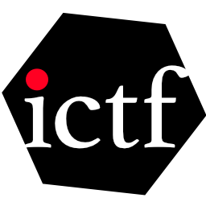

＊本BoFは「チャタムハウスルール」の下で開催を予定しています。BoF参加者はそこで得た情報を自由に使うことができますが「誰の発言か」また「誰が参加していたか」については他言無用に願います。
Facebook グループへ浅草橋ヒューリックホール
〒111-0053 東京都台東区浅草橋1-22-16
ヒューリック浅草橋ビル
○JR総武線「浅草橋駅（西口）」より徒歩1分
○都営浅草線「浅草橋駅（A3出口）」より徒歩2分
○ヒューリック浅草橋ビルには一般駐車場はございませんので、お車でご来場の方は近隣駐車場をご利用下さい。

今年(2019年)は1989年の「ティム・バーナーズ＝リーによるウェブの発明」と「ベルリンの壁の崩壊」から丁度30年目にあたります。この節目の年に（表立ったところではあまり議論されていないような...）インターネット周辺と国の制度や方針について、あれやこれやを語れる仲間を見つけるのに相応しい場所かもしれない… そんな期待からInternetWeek2019のBoF開催を申し込むことにしました。BoFの開催申込書には「組織名」と「参照すべき情報(もしあればURL等で)」を記入する欄がありまして...（中略）「ICTF.JP」という、なんとなくそれっぽいドメインが登録できてしまったので、締め切りギリギリでBoF主催の組織名は「ICTF」ということになった次第です。ということで、現時点でICTFは私（秋山）一人でやっている正真正銘のアヤシイ団体です。皆様のご参加をお待ちしております。
BoF会場にて「No Blocking Internet」ステッカーを無料配布する予定です。
ご希望の方はお気軽に秋山(@yet2come) にお声がけください。
#もし持っていくのを忘れたらごめんなさい...